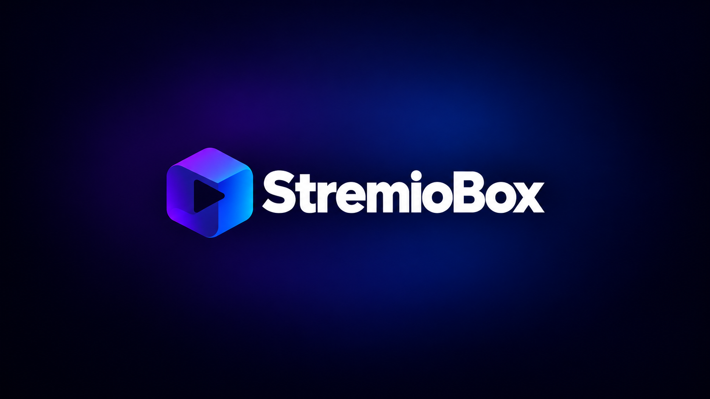
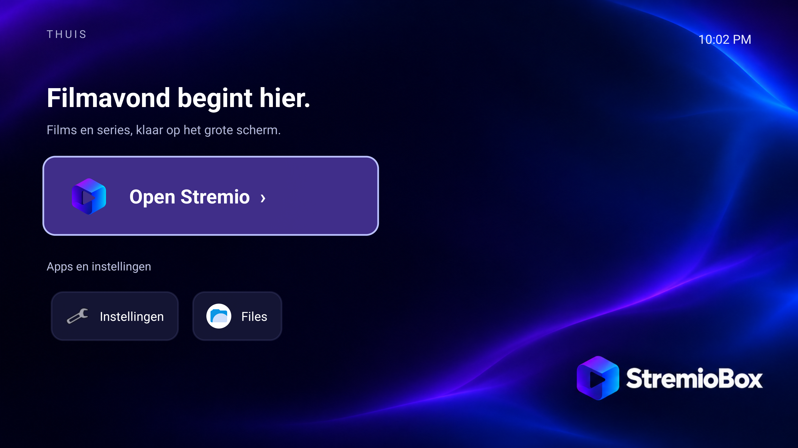

A Home of its own
Matching boot art, a dark blue and violet Home screen, and D-pad tiles for Stremio, settings and your other apps.
Meet the brand kitA dedicated Android TV experience, built around Stremio. Pick up your remote, settle in and make a small Intel box the heart of your living room.

MADE FOR THE SOFA
A consistent look from boot to Home, with the fixes that made our NUC feel at home next to the TV.
Matching boot art, a dark blue and violet Home screen, and D-pad tiles for Stremio, settings and your other apps.
Meet the brand kitStremio's usual mpv interface and controls, with Intel hardware decoding and a tested 10-bit HDR10 output path.
See how playback worksPackaged fixes load again at boot. Ordinary Homatics keys work after reboot on our test installation.
Read the test results
TESTED, WITH CONTEXT
r5 is a preview for the Intel NUC10i5FNH. We publish what we checked, including the limits.
Full compatibility matrix4K HEVC Main10 at ~24 fps, HDR10, audible HDMI sound and display-standby recovery were checked. Long-duration soak and a separate final-r5 physical power-button retest are still pending.
Other hardware, Dolby Vision, HLG, AV1, VLC/ExoPlayer, 4K60, true S3 sleep and HDMI-CEC are not verified.
START YOUR NEXT FILM NIGHT
Download the preview, try a live boot and pair your own remote. No personal accounts or Bluetooth bonds come with the image.
git clone https://github.com/zubSero/StremioBox.git
cd StremioBox
py tools/download.py --output downloadsAbout 6 GB free while assembling. Back up before disk installation. Userdebug preview: permissive SELinux and authenticated network ADB. Security and update scope.
A FEW GOOD QUESTIONS
No. StremioBox is an independent community project built around Stremio and an Android TV base. It is not endorsed by Stremio or LineageOS. Their software and trademarks retain their original terms.
Home is our own launcher. Playback retains Stremio's usual mpv interface and controls, with a compatibility-checked native bridge and HDR/subtitle helpers. VLC and ExoPlayer have not been independently validated.
Reboots retain the packaged fixes. The tested same-version Stremio reinstall retained the integration, but a future app layout needs review. Replacing the OS requires an image containing these ports. There is no managed OTA channel yet.
The repository includes 17 ports, product sources, Home source and the brand kit. r5 is a controlled branding/launcher repack of the compiled r4 platform. A clean public full rebuild and source-manifest reconciliation are still roadmap items. Start with the build guide.
BUILT IN THE OPEN
Help test another setup, improve a patch or make the next film night a little smoother.